Interact with 3D UI
In this article
Objective
This chapter introduces the 3D User Interface features provided by VotanicXR.
3D User Interface is specialized the user interface for the virtual reality development.
The design concern is different between tranditional PC Game and VR Game developed with VotanicXR, to use the advantage and avoid the disadvantage of virtual space. The design concept of User Interface in virtual world is easy to read and leading less discomfort, suitable distance and flow is good for user.
This chapter introduces how to use and modify the built-in 3D UI components and prefabs.
Built-in 3D UI Components in VotanicXR
The built-in 3D UI components are Button, Panel and Slider.
Set up UI Interaction Sample Scene
Go to Assets > Votanic > VotanicXR_Tutorial > Tutorial05 and open the scene 3D UI provided.
GameObject TutorialController with script component Tutorial05Controller is provided for the tutorial usage.
Create 3D UI
To create a frame for the 3D UI canvas, please use the following setting.
Create an canvas gameobject of Unity, we use Image for the demonstration.
Set the corresponding canvas render mode into world space, and tune the rect transform in suitable parameter that easy be reached for user.
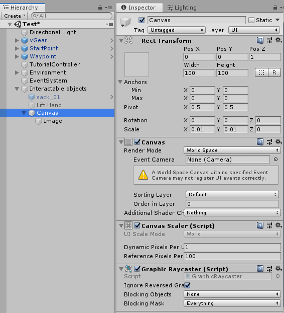
Robot dummy provided by StartPOint prefab can be a reference of size.
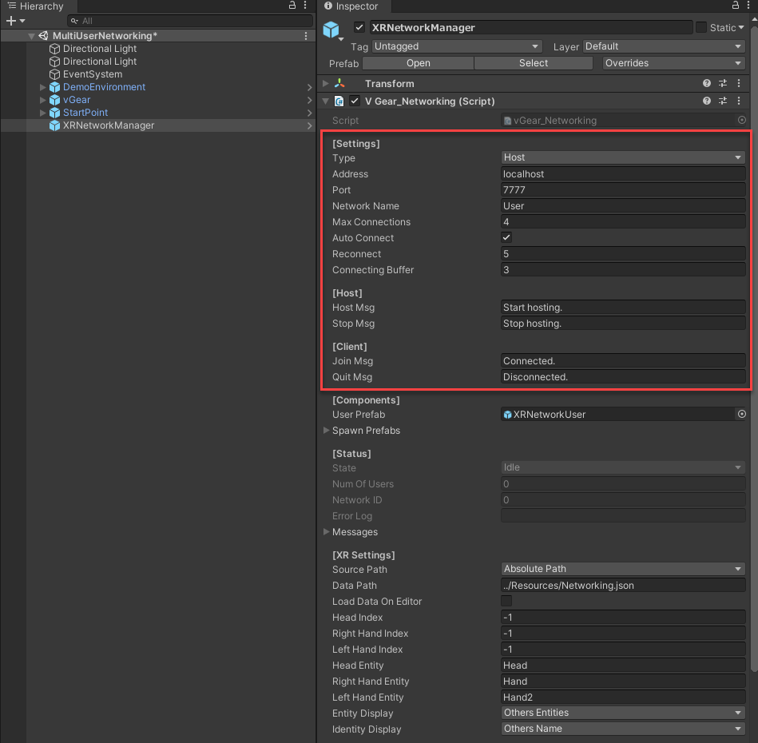
Interact with vGear Button
V Gear_Button (Script), inherited from vGear_Interactable class and vGear_UI class, can be added into both 3D gameobjects or UI Element of Canvas.
It may set the transition effect into this interactable, the transition happened when transitioning, on click, on disable or on select.
Add vGear Button Component
The sample of add vGear Button is shown below.
Add the vGear Button component by
vGear > Component > Button, the gameobject is wrapped and parented to{gameobject.name}.Grabbables.The parent is a gameobject with Transform
fortheV Gear_Button (Script)component, and the gameobjectwiththeCanvasandV Gear_Button (Script)component will be the child. The structure is to separate the management of the transform function and rect transform function .Before add the component After add the component 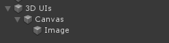 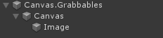
Configure vGear Button with adding vGear Transition Effect
The V Gear_Button (Script) is similar to the V Gear_Interactable (Script), the additional settings are series of transition setting after [Additional Setting].
The Transition Settings can only be set in editor mode.
And do not forget to set the Box Collider into suitable size.
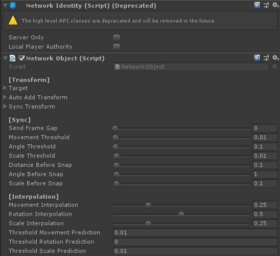
Note that the value of Transform in UIState is applying into the Transform of the object, in detail, the value is applied with respect to the original rect transform, and the Scaling is added to the original value.
The below will shown a sample of the Transition effect.
Go to
V Gear_Button (Script) [Transition] > Transition, the common setting is stored here. We take the default value, that is using time and 0.25 seconds as Transition Factor.Go to
V Gear_Button (Script) [Transition] > Select, change the theScalinginto (0.2, 0.2, 0.2),Rotationto (0, 0, 180) andColorto purple.Go to
V Gear_Button (Script) [Transition] > Click, change the theScalinginto (-0.2, -0.2, -0.2),Rotationto (0, 0, 360) andColorto purple.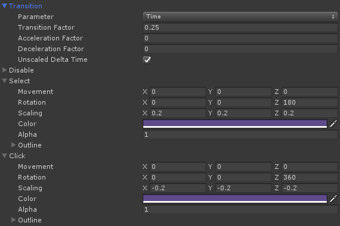
The result of selecting button and the value change is shown below.
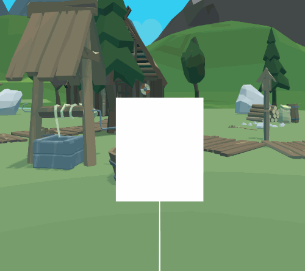
| Editor Mode | Play Mode |
| 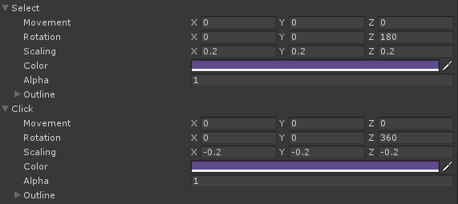 | 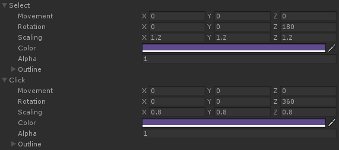 |
Detail of the Transition Effects will be described in Detail of UI Element.
Using vGear Panel
vGear_Panel, inherited from vGear_Button class, manages the display of itself and its child gameobjects.
it can be added into both 3D gameobjects or UI Element of Canvas.
The additional features of V Gear_Panel (Script) component is the functions to react with the childs.
Add vGear Panel Prefab
Instead of adding the component manually, VotanicXR provides prefabs with the V Gear_Panel (Script) component, and they contain similar structure as mention above.
The prefabs using V Gear_Panel (Script) component are UIPanel and InputPanel, and we take UIPanel as the sample below.
Right-click vGear > GameObject > UIPanel, the prefab named Panel is added to the scene.
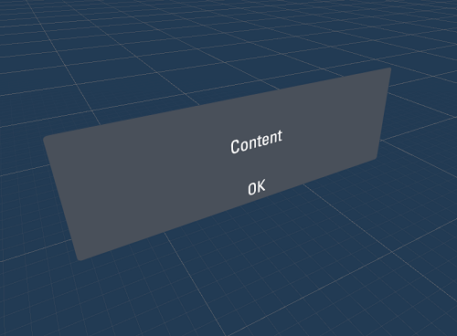
The structure of the prefab Panel.
| Hierarch | Flow of structure |
| 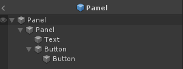 | 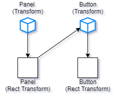 |
The prefab is provided with some presets that convenient for development, that is the color of button and the panel will be closed on click. The setting below is the preset Unity Event of the button in the prefab.
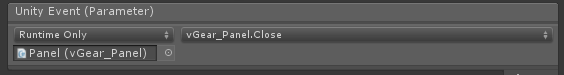
The demonstration usage is shown as below.
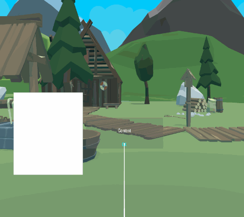
Configure vGear Panel
In addition to the transition effects, vGear Panel class provides features to manage the child gameObject as the setting Panel Settings below.

The field Grab With Buttons will overrides child buttons grab setting if true.
Besides, the provided functions of vGear Panel class will affects the child gameObjects, such as the function vGear_Panel.Close in the preset Unity Event, it closes the panel and the child gameObjects, instead of only close the panel only.
Using vGear Slider
V Gear_Panel (Script), inherited from vGear_Button class, manages the child canvas gameobjects by the slider using triggering.
It can be added into both 3D gameobjects or UI Element of Canvas to implement slidable features.
Add vGear Slider Prefab
VotanicXR also provides prefab with the V Gear_Slider (Script) component, and it contains similar structure as mention above.
The prefab using V Gear_Slider (Script) component is ScrollPanel, will be introduced below.
Right-click vGear > GameObject > ScrollPanel, the prefab named ScrollPanel is added to the scene.
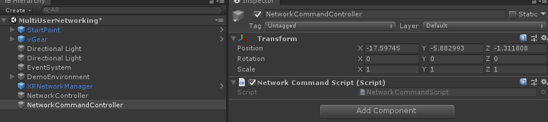
Configure vGear Slider
In addition to the transition effects, vGear Slider class controls the slider as the setting Slider Settings below.
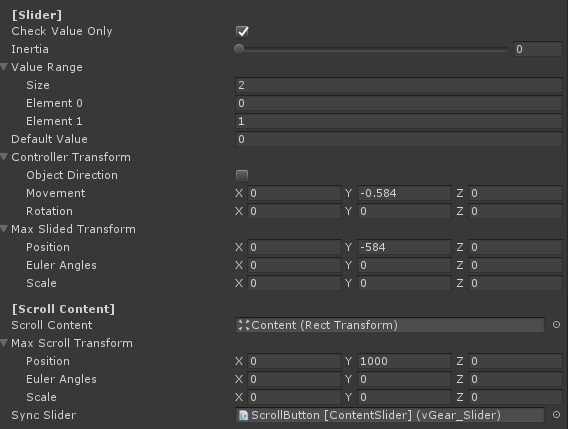
The Controller Transform, Max Slided Transform and Max Scroll Transform are the parameters should be set for each slider.
Max Slided Transform is the maximum slider transformation for the slider movement with respect to the rect transform, .
Max Scroll Transform is the maximum scroll content transformation value from the original.
Controller Transform is the structure to calculate controller transformation, as a factor to map from controller input to the slider, the value of this should be the same ratio to the parent transform scale with the Max Slided Transform to synchorinize controller input.
The Value Range is the interaction return value range of slider, can be called by using GetValue() for instant responce, such as volume of a sound emitter.
The useful setting to be adjusted is Inertia, the movement rate after controller release.
The preset of Inertia in the child ScrollButton [ContentSlider] is set as 0.75 as shown below.
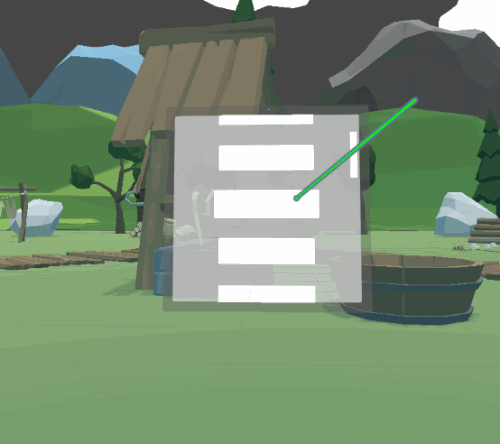
In Contrast, the child Slider without setting Inertia is shown below.
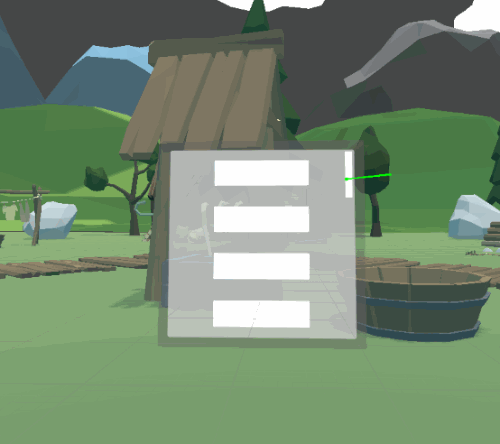
The below is the preset settings of the child ScrollButton [ContentSlider] and child Slider, they are synchronized sliders with each other.
| ScrollButton [ContentSlider] | 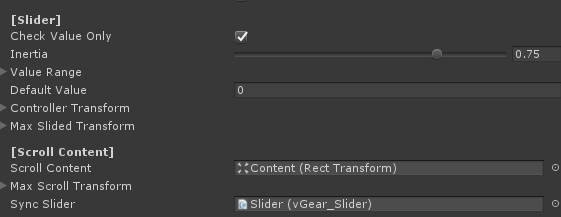 |
| Slider | 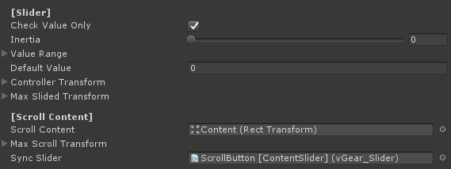 |
The detail of the UI elements will be introduced in Detail of UI Element.